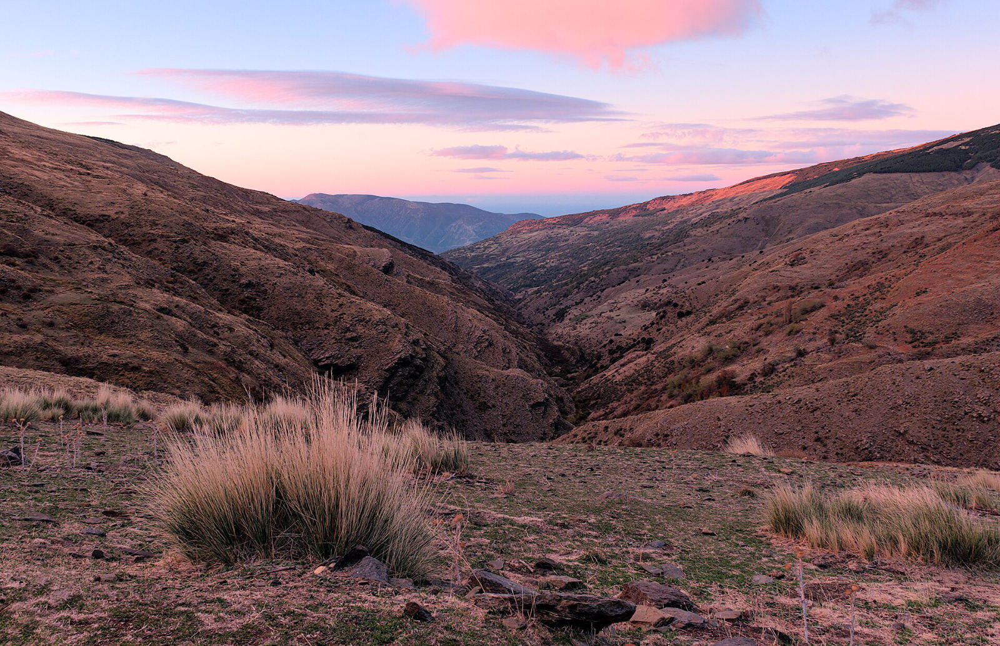

EVEREST es el acrónimo de «Variables esenciales para la caracterización y seguimiento remoto de ecosistemas de montaña a lo largo de un gradiente biogeográfico: del dato a la toma de decisiones» (en inglés, Essential Variables for the rEmote characterisation and monitoRing of mountain EcosystemS along a biogeographical gradienT: from data to decision making). Es un proyecto de investigación orientada de la convocatoria de Proyectos de Generación de Conocimiento 2023 del Plan Estatal de Investigación Científica, Técnica y de Innovación, liderado por la Universidad de Granada.
- Referencia
- PID2023-151939OB-I00
- Entidad
- Universidad de Granada
- Investigadores principales
- Javier Martínez López y Domingo Alcaraz Segura
- Duración
- 1 sep. 2024 – 31 dic. 2028
- Financiación
- 297.500 € · MICIU/AEI y FEDER, UE
- Parques
- 8 parques nacionales de montaña
Antecedentes
Con solo el 25 % de la superficie emergida, las montañas albergan más del 85 % de las especies de mamíferos, anfibios y aves del mundo, muchas de ellas endémicas. Las áreas protegidas de montaña son una estrategia clave para frenar la pérdida de biodiversidad, pero soportan presiones crecientes, directas e indirectas. Su conservación depende de una gestión basada en datos y modelos que permitan seguir y anticipar cómo responden los ecosistemas a múltiples factores de estrés.
Las montañas de España y Portugal sufren un doble riesgo: son montañas y están junto a la cuenca mediterránea, donde se espera que aumenten la variabilidad climática y la sequía estival y que disminuya la duración de la nieve. La transición entre el frío del invierno y la sequía del verano será más rápida y dura, y acortará el periodo de actividad biológica de plantas, animales y microorganismos del suelo.

Saber cómo cambian la composición, la estructura y el funcionamiento de los ecosistemas es imprescindible para decidir si una especie o un hábitat tiene un estado de conservación adecuado, si necesita restauración y si las medidas aplicadas funcionan. Además, es una obligación legal derivada de la Directiva Hábitats (artículo 17), la Directiva Marco del Agua y el Reglamento de Restauración de la Naturaleza.
Por qué Variables Esenciales de la Biodiversidad desde satélite
- Seguimiento continuo y a gran escala. Las series de MODIS, Landsat y Sentinel cubren décadas y todo el territorio, también las zonas de difícil acceso.
- Respuesta temprana. Los atributos funcionales (productividad, estacionalidad, fenología) responden antes a las perturbaciones que la composición y la estructura, que tienen más inercia.
- Menor coste. Seguir la composición de especies sobre el terreno a escala regional es muy caro; el satélite permite priorizar dónde muestrear.
- Comparables entre montañas. Las mismas métricas permiten comparar parques a lo largo de un gradiente biogeográfico.
- Útiles para el reporte. Informan sobre el estado de conservación, la calidad del agua y la recuperación tras perturbaciones y restauraciones.
Retos
- Distancia entre ciencia y gestión. Muchas herramientas de teledetección no responden a las necesidades reales de los gestores ni se integran en sus planes de seguimiento.
- Metodologías heterogéneas. Las metodologías oficiales de evaluación del estado de conservación difieren en variables, umbrales, escalas y fechas.
- Datos de campo escasos. La verdad terreno para calibrar y validar los productos de satélite está repartida de forma desigual entre parques.
- Condiciones de referencia. A menudo faltan referencias con las que comparar el estado pasado, presente o futuro de los ecosistemas.
Hipótesis de partida. El aumento de la temperatura y, sobre todo, la reducción de la disponibilidad de agua deberían afectar de forma distinta a los ecosistemas de montaña: las montañas con veranos más templados y lluviosos se verán menos afectadas que las de clima más mediterráneo y semiárido. Esta susceptibilidad se trasladará a la composición, la estructura y el funcionamiento de la biodiversidad.
Objetivos
Objetivo general. Sentar a gestores y científicos para co-diseñar, co-producir y validar un marco metodológico común, basado en la experiencia de MonitorEO, que proporcione variables científicamente sólidas y útiles para la gestión, junto con capacidades de seguimiento y modelización, para informar sobre el estado de conservación de especies y hábitats (Directiva Hábitats), la calidad del agua (Directiva Marco del Agua) y la recuperación de los ecosistemas tras perturbaciones y restauraciones (Reglamento de Restauración de la Naturaleza).
Objetivos específicos, con estudios piloto en los ocho parques:
- Co-diseñar y co-crear un grupo de trabajo ciencia-gestión que lidere un cambio transformador basado en el uso, por parte de gestores y responsables de la toma de decisiones, de datos de teledetección científicamente sólidos para cumplir las obligaciones de reporte derivadas de las normativas europeas. Tarea 1
- Identificar y operativizar un conjunto de Variables Esenciales de la Biodiversidad derivadas de teledetección, científicamente sólidas y relevantes para la gestión, que caractericen la composición, la estructura y el funcionamiento de los ecosistemas y respondan a esas obligaciones. Tarea 2
- Caracterizar las dinámicas de referencia, la variabilidad espacial, las tendencias y las anomalías de las variables y métricas seleccionadas, y compararlas entre los parques nacionales de montaña. Tarea 3
- Probar y validar con los gestores el desempeño de las variables y métricas seleccionadas para evaluar y seguir el estado de conservación de especies y hábitats, los parámetros de calidad del agua y la recuperación tras perturbaciones y restauraciones. Tarea 4
- Co-producir e implementar una herramienta en línea de apoyo a la decisión, casi en tiempo real, para explotar los resultados del proyecto con tres tipos de usuarios (científicos, gestores y público general), y proporcionar guías y divulgación que apoyen la toma de decisiones, la gestión y la sensibilización pública. Tarea 5
Preguntas de investigación
- ¿Cuáles son las Variables Esenciales de la Biodiversidad y métricas más sólidas científicamente y útiles para la gestión en relación con las obligaciones de reporte europeas en las áreas protegidas de montaña?
- ¿Cómo pueden derivarse las Variables Esenciales de la Biodiversidad a partir de datos brutos, combinando muestreos de campo, instrumentos automáticos, modelos ecológicos y teledetección?
- ¿Cómo caracterizar con teledetección las dinámicas de referencia, las tendencias, las anomalías y la variabilidad espacial de la composición, la estructura y la función de los ecosistemas?
- ¿Cómo seguir la estabilidad de los ecosistemas para detectar trayectorias de recuperación o restauración y posibles cambios de régimen?
- ¿Pueden identificarse los principales factores de los cambios de distribución y de régimen con modelos que integren las distintas dimensiones del ecosistema?
- ¿Cómo pueden contribuir la inteligencia artificial y las nuevas técnicas de modelización?
- ¿Responden y se recuperan antes los atributos funcionales que los de composición y estructura ante perturbaciones y restauraciones?
- ¿Qué consecuencias tienen los cambios en la estructura y la composición sobre el funcionamiento, y viceversa?
- ¿Se verá menos afectada por el cambio climático la biodiversidad de las montañas con veranos más templados y lluviosos que la de las montañas mediterráneas y semiáridas?
- ¿Qué elementos ganan y cuáles pierden según las tendencias observadas en las variables del ecosistema?
- ¿Detectan con precisión las herramientas de teledetección los efectos de las perturbaciones y de la restauración que los gestores observan sobre el terreno?
- ¿Qué medidas de gestión activa pueden aplicarse de forma coordinada con los actores implicados para conservar la biodiversidad de estas montañas ante el cambio global?
Resultados esperados
- Un conjunto de Variables Esenciales de la Biodiversidad y métricas de satélite, sólidas y útiles para la gestión, para cada obligación de reporte.
- Dinámicas de referencia, tendencias y anomalías de esas variables comparadas a lo largo de un gradiente biogeográfico.
- Mapas de hábitats de alta resolución sobre grandes superficies y su estado de conservación.
- Nuevos módulos de MonitorEO para hábitats, especies, agua y restauración, disponibles a través de LifeWatch ERIC.
- Guías, datos y procedimientos que los gestores puedan usar en sus planes de seguimiento cuando acabe el proyecto.
- Un estudio piloto ampliable al resto de la red Natura 2000.